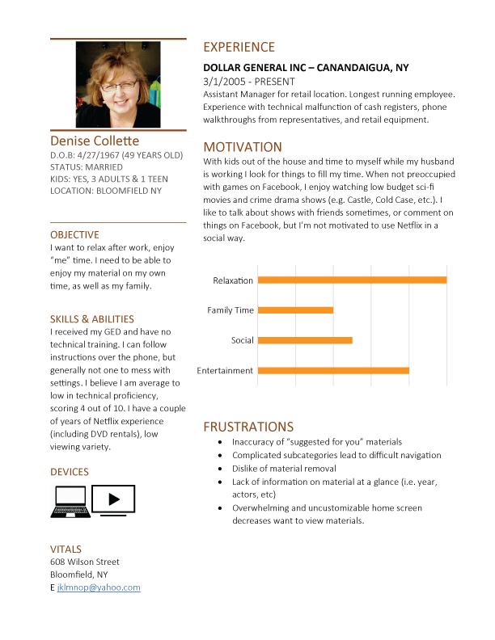

Netflix Study
RIT 2016
Ethnography often plays an important part in research in the field of Human-Computer Interaction. During my first semester, as a part of the Foundations of HCI course, I was part of a team which carried out a study on the user experience on Netflix. The main purpose of this study was to understand the problems faced by the user and to propose a design solution to make their experience better.
Data Collection
Each member of our team conducted a field observation. Since the focus of our study was Netflix, our observation method was direct and active. From our observations, we prepared a set of interview questions and narrowed down the research question.
We divided the users into user groups based on their motivation to use Netflix and each member of the team selected a user group to interview.
A task-walkthrough was conducted that required the subject to search for a show with a set of criteria the team had decided beforehand.
Persona
We developed Personas based on the data collected and the user groups. Each team member created a persona from the data collected during their interview and task-walkthrough.




Storyboard
Once we collaborated the findings from the task-walkthrough we found a common problem. The limited sorting and filtering options available on Netflix. We demonstrated the problem and our design solution with the help of storyboards
Problem Scenario:
Character: Matt Snyder
"Every night when I go to bed, I use my smartphone to watch shows on Netflix. This helps me relax and go to sleep after a long day of schoolwork and basketball practice. I prefer comedies that lift my mood or drama’s that lull me to sleep. However, I stay away from high-paced action clips because it raises my adrenaline and causes me to lose sleep. My friends often recommend shows as per their own preference. However, I rarely find something from their recommendations that fit my current mood and has appropriate run times that does not keep me up to late. I use the Netflix search box to find the shows recommended by my friends, which takes time when I am searching for several shows. When none of my friends’ recommendations suits me, I browse Netflix suggestions, where I rarely find something to watch. At that point, I look up at the smart phone’s clock and realize that I wasted 10 – 15 minutes. I then decide to watch something I have already seen. Of course, I will not enjoy it as much as something I have not seen before, but at least it will help me go to sleep."

Solution Scenario:
Character: Matt Snyder
"Every night when I go to bed, I use my smartphone to watch shows on Netflix. This helps me relax and go to sleep after a long day of schoolwork and basketball practice. I prefer comedies that lift my mood or drama’s that lull me to sleep. However, I stay away high-paced action clips because it raises my adrenaline and causes me to lose sleep. Netflix allows me to create my own category of shows by setting certain criteria. I created a category called “Bedtime”, where I set the genres as comedies and dramas, and the runtime as less than 40 minutes. I also created a list of my favourite actors and specified the release year as anything after 2012. Netflix populated my “Bedtime” category with content that fit my criteria. This makes it much easier for me to find something to watch from my preferred genres, something that is not too long that it keeps me up late, and that stars at least one of my favourite actors. If one day I decide to watch something with shorter or longer runtimes, I can simply modify the runtime setting in my category. Doing so will update the content in the category to reflect the new settings."